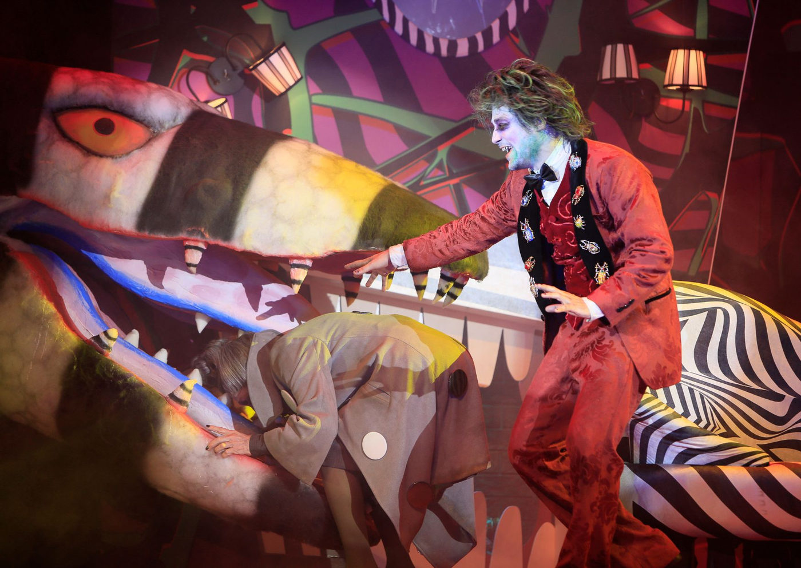

"Beetlejuice - O Musical" retorna ao Brasil com Eduardo Sterblitch e curta temporada no Rio de Janeiro e São Paulo

Sucesso de público e crítica, o espetáculo, premiado como "Melhor Musical" em 2024, terá novas apresentações a partir de agosto no Teatro Multiplan (RJ) e em outubro no Teatro Liberdade (SP)
O fenômeno teatral "Beetlejuice - O Musical" está de volta ao Brasil para novas temporadas no Rio de Janeiro e São Paulo, após um grande sucesso em 2024. O espetáculo, inspirado no icônico filme "Os Fantasmas Se Divertem" (1988), de Tim Burton, retorna com Eduardo Sterblitch no papel principal, vencedor de três prêmios como Melhor Ator.
A superprodução da Touché Entretenimento e Artnic Entretenimento, com direção de Tadeu Aguiar e direção musical de Laura Visconti, estreia em 7 de agosto no Teatro Multiplan, no Shopping VillageMall (RJ), seguindo para São Paulo em outubro, no Teatro Liberdade. Os ingressos já estão à venda no Sympla e nas bilheterias dos teatros.
Um dos musicais mais premiados do ano
A produção foi consagrada como Melhor Musical de 2024 nos Prêmios Bibi Ferreira, Destaque Imprensa Digital e Arcanjo. Além disso, obteve mais de 20 indicações aos principais prêmios de teatro musical no Brasil.
O espetáculo traz toda a irreverência e o humor sombrio que conquistaram fãs ao redor do mundo. A versão brasileira tem libreto original de Scott Brown e Anthony King, com músicas de Eddie Perfect e versão brasileira de Claudio Botelho.
A equipe criativa inclui grandes nomes do teatro musical:
Direção Musical: Laura Visconti
Cenografia: Renato Theobaldo (vencedor do Prêmio DID 2024)
Figurino: Dani Vidal e Ney Madeira
Coreografia e Direção de Movimento: Sueli Guerra
Desenho de Luz: Dani Sanches
Desenho de Som: Gabriel D’Angelo
Visagismo: Anderson Bueno
Assistência de Direção: Lucas Pimenta
História e Sucesso Internacional
O espetáculo é baseado na história da adolescente Lydia, que, após a morte de sua mãe, se muda com seu pai para uma casa assombrada por um casal de fantasmas. O espírito caótico Beetlejuice surge como um guia sobrenatural descontrolado, trazendo um humor ácido e cenas memoráveis.
Na Broadway, o musical foi um grande sucesso, lotando teatros e se consolidando como um dos espetáculos mais populares dos últimos anos.
Serviço – "Beetlejuice - O Musical"
RIO DE JANEIRO
Local: Teatro Multiplan | Shopping VillageMall (Av. das Américas, 3900 - Barra da Tijuca, Rio de Janeiro)
Temporada: 7 de agosto a 21 de setembro
Sessões:
Quartas, Quintas e Sextas às 20h
Sábados e Domingos às 16h
Sessões extras às terças-feiras
Ingressos: A partir de R$ 120 (meia-entrada disponível)
Vendas: Sympla
SÃO PAULO
Local: Teatro Liberdade (Rua São Joaquim, 129, Liberdade)
Temporada: 3 de outubro a 30 de novembro
Sessões:
Quartas a Sextas às 20h
Sábados às 16h e 21h
Domingos às 16h e 20h30
Ingressos: A partir de R$ 42,36 (meia-entrada disponível)
Vendas: Sympla
Classificação indicativa: 14 anos
Duração: 2h30min (com intervalo de 15min)
Com um visual impressionante, números musicais contagiantes e performances memoráveis, "Beetlejuice - O Musical" promete repetir o sucesso e conquistar ainda mais fãs no Brasil.